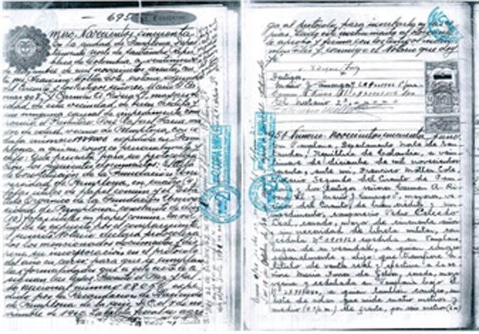

En estos 60 años, han sido muchos los sucesos que han permitido que el alma máter hoy, sea reconocida por su excelencia, compromiso y calidad educativa.
Acompáñenos por este recorrido histórico que comenzó el Padre Faría y que hoy se constituye el alma de la región.
En el año de 1959, el padre José Rafael Faría Bermúdez, empezaba a gestar reuniones periódicas, con allegados y futuros fundadores, que tenían como fin, la creación de un universidad en la ciudad de Pamplona.
Mediante el decreto n° 55 del 27 de septiembre de 1960 el llamado Comité Pro - Universidad de Pamplona, buscaba crear el primer centro universitario de Pamplona.
Corrían los días de febrero, cuando al consultorio de Eduardo Villamizar Lamus llegó Roberto Trujillo Villamizar, un ciudadano pamplonés, y le dijo: "Vengo a entregarte las llaves de nuestra casa porque el padre Faría la compró para la Universidad".
Días después, Villamizar Lamus recibió tres camiones cargados de pupitres, mesas, escritorios, sillas y muebles comprados por el padre Faría en Palmira, Valle.
En el transcurso de ese año, el padre Faría y su equipo de trabajo lograría que el Ministerio de Educación le otorgara el título de universidad pública a la recién fundada Universidad de Pamplona gracias al Decreto Nº 0553.
En el año siguiente, en 1971, con el Decreto No. 1550 del 13 de Agosto se le permite otorgar títulos profesionales a sus graduados.
Luego de 14 años de entrega y dedicación por el alma máter que ayudó a fundar, el padre Faría presentaría su renuncia ante el HCSU, donde, en un solemne acto de despedida, le otorgó el título Doctor Honoris Causa, como también el título de Rector honorario.
El padre Faría, moriría un 17 de diciembre de 1979, cinco años después de haberse retirado de la dirección de la universidad.
El tener esta modalidad, no solo generó beneficios para la universidad, sino que estimuló la creación de documentos propios y textos de los mismos docentes, que luego serían reconocido con su autoría legal.
También abrió las puertas a los posgrados, programa incipiente en la universidad, que se consolidó con el transcurrir de los años, mientras que potenció al CEMUP (Centro de Educación Media de la Universidad de Pamplona) como uno de los colegios más destacados del país.
Durante la primera administración del rector Ciro Alfonso Caicedo, se logró que el presidente de la República en ese entonces, Belisario Betancur, presidiera el Consejo Superior en la Casa de Nariño, apoyando no solo los procesos que se estaban llevando en la Universidad de Pamplona, sino reconociendo su importancia en el eje educativo nacional, otorgándole un espaldarazo presupuestal que se vería en los siguientes años.
En los años 80, la universidad empezó a crecer y a ampliar sus espacios físicos. La Casona, fue adaptándose poco a poco a las nuevas necesidades de los estudiantes que buscaban encontrar, mejores salones, mejores profesores que impulsaran la revolución educativa que se forjaba en ese entonces.
El crecimiento de la oferta académica, impulsó a la universidad a integrar nuevos programas para sus estudiantes. Es por eso, que se crea el CETA (Centro experimental de tecnología de alimentos), que ayudaría a la formación del programa de Tecnología de Alimentos.
Este centro, luego se convertiría en el campus principal, ubicada en el Km 1 Vía Bucaramanga.
Durante los años 90 hasta 1998, la Universidad de Pamplona tuvo un crecimiento, mayormente impulsado por los posgrados en los convenios institucionales que los rectores de esa época como Oscar Rosas Contreras, Rodolfo Contreras y Pedro Nel Santafé, iniciaron con diferentes entidades en Santa Marta, Sincelejo, Arauca, Ocaña, Piedecuesta y Cúcuta, que potenciaron parte de la planta física actual debido a sus beneficios económicos.
Desde 1999 hasta el 2007, la administración de la Universidad de Pamplona, en cabeza de Alvaro González Joves, inicia un trepidante ascenso no solo en su planta física, sino también en materia económica, académica y de reputación a nivel nacional e internacional, llegando a incrementar sus estudiantes de 8.000 matriculados a 1998 a más de 30.000 en el 2007.
El inicio de un nuevo siglo trajo consigo muchos cambios radicales para la Unipamplona. 30 programas de pregrado para el inicio del año 2000, 10 más en camino, la creación del CIU (Consejo de Investigación Universitario), además de los CIFAS (Centro de Investigación de las Facultades).
A la par de todo esto, se inauguró el CREAD de Cúcuta, el 3 de marzo del 2000, abriendo la extensión a los programas de Música y Licenciatura en Educación Artística.
Fue en la administración de González Joves, donde se gestaron una serie de incentivos, para que a través de becas, estudiantes y docentes pudieran hacer distintos doctorados en las más destacadas universidades de España y países latinoamericanos, que sirvieron para que a su regreso, muchos de esos doctores, formaran parte de la planta docente altamente calificada de la universidad, incrementando de un docente doctor en 1998 a más de 100 al término de la administración Joves.
Con la llegada de la tecnología, se comenzó a implementar nuevas maneras de automatizar procesos y condensar los flujos de información a través de un sistema de información propio. Fue así como nació Plataforma Siglo XXI,en las inmediaciones de La Casona, que serviría como un apoyo tecnológico a los distintos procesos de la universidad. El CIADTI, es hoy en día una dependencia que aporta no solo conocimiento e innovación, sino servicios informáticos que generan beneficios económicos importantes para la Unipamplona.
El sueño de Alvaro González Joves era convertir la Unipamplona en la universidad de la frontera. Parte de ese sueño se cumplió al inaugurar la sede Villa del Rosario, en los terrenos donde antes funcionaba el ESAP (Escuela de Superior de Administración Pública) y no solo lograr extender los programas que se estaban gestando desde Pamplona, sino articular el CREAD de Cúcuta y Villa, fortaleciendo así la educación universitaria en la región.
Desde 1999 la universidad logra poner a funcionar una emisora llamada HJF Estéreo. Con el apoyo de González Joves, proporcionando desde sus inicios equipos y recursos físicos, en el 2005, cambia su nombre a Radio Universidad de Pamplona 94.9 FM, integrando nuevos programas y formatos a su parrilla de programación. La emisora fue y es, uno de los pilares comunicativos de la universidad.
Fue en el 2003, cuando se empieza a gestionar los terrenos y todo lo relacionado a lo que se conoce como Villa Marina, dividida en dos partes. La Granja experimental Villa Marina y la Sede Social Villa Marina. Esta empieza a funcionar plenamente en el 2006, bajo la dirección de Interacción Social y se convierte en uno de los logros, en cuanto a espacios de práctica y recreación, más importantes en la administración de González Joves.
Luego de la salida de González Joves, Pedro León Peñaranda asume las riendas de la universidad, y empieza a visionar espacios que permitieran un desarrollo mucho más completo de la Facultad de Salud, y de los programas por extensión se ofrecían en Villa del Rosario.
En la la rectoría de Esperanza Paredes, la Universidad de Pamplona adquiere el edificio a la Empresa Social del Estado Francisco de Paula Santander, donde se trasladaron los programas de Psicología, Fonoaudiología, Enfermería, Terapia Ocupacional y Fisioterapia.
Con el aumento de la demanda académica, muchos de los laboratorios y aulas empezaron a quedarse cortos para los estudiantes que veían en la Unipamplona la mejor opción en educación superior. En el 2014 se adquieren los predios del antiguo Colegio Virgen del Rosario, y se inicia un proceso de restauración y adecuación para convertirse junto a La Casona, el Campus principal, el CREAD de Cúcuta y Villa del Rosario en uno de los cinco entornos de aulas más destacados de la Universidad de Pamplona.
Con la gestión del rector Elio Daniel Serrano, y la consolidación del proyecto con la llegada de Ivaldo Torres Chávez, el servicio de comedor para los estudiantes se convirtió en una realidad en febrero de 2016. Gestión que se venía realizando desde el 2013 y que impacta notablemente en el bienestar de los estudiantes de la sede Pamplona, como también la sede Villa de Rosario.
En el inicio de su periodo como rector, el Dr. Ivaldo Torres Chávez, ha enfatizado en la búsqueda de la acreditación institucional como eje fundamental de la educación en esta época de conectividad, cambios culturales y del proceso de paz, concentrando sus esfuerzos en una educación que transforme, que libere y que forme los nuevos líderes para la paz del país.
Todo esto, de la mano de una verdadera excelencia académica, procesos organizados y aunando esfuerzos en la consecución de mejores recursos para la Unipamplona.
Han sido 60 años en los que hemos estado innovando y construyendo los sueños de toda una región y de todo un país. Hoy, queremos dedicar este breve recuento a todos y cada uno de los estudiantes, administrativos, docentes y personas que han estado involucradas en la realización de este sueño: El sueño del Padre Faría.
Gracias.
42 personas estuvieron involucradas en la fundación del alma máter, entre ellos distintas personalidades como, Virgilio Barco Vargas, quien luego fuera presidente de la República de Colombia, Eduardo Cote Lamus, Alfonso López Acero, Eduardo Villamizar Lamus, el padre Faría y la única mujer que participó en este proceso, Alicia Guerrero de Lamus.

Registro notarial de fundación de la Universidad de Pamplona